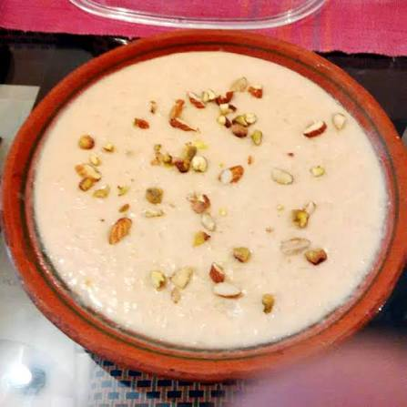

Rice Kheer

Description
Rice Kheer is a sweet Indian rice pudding flavored with cardamon,
pistachios, and dried fruit. This easy recipe makes 4 bowls of this
rich and creamy dessert — it's the best rice pudding you'll ever taste!
Ingredients
- 2 cups coconut milk
- 2 cups milk
- 3 tablespoons white sugar
- ½ cup basmati rice
- ¼ cup raisins
- ½ teaspoon ground cardamom
- ¼ cup sliced almonds, toasted
- ¼ cup chopped pistachio nuts
- ½ teaspoon rose water (Optional)
Steps
- Bring coconut milk, milk, and sugar to a boil in a large saucepan
over medium heat. Add rice, reduce the heat to low, and simmer
until mixture thickens and rice is tender, about 20 minutes.
- Stir in raisins, cardamom, and rose water; cook for a few more
minutes. Ladle into serving bowls and garnish with almonds and
pistachios.
Home